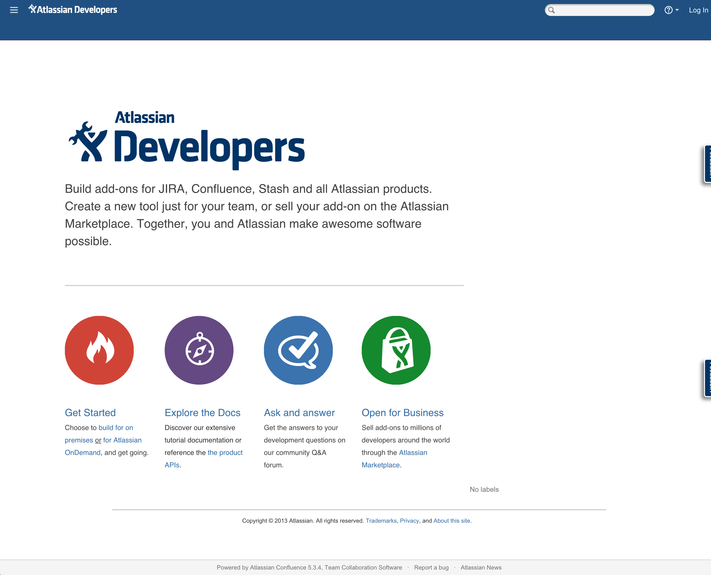
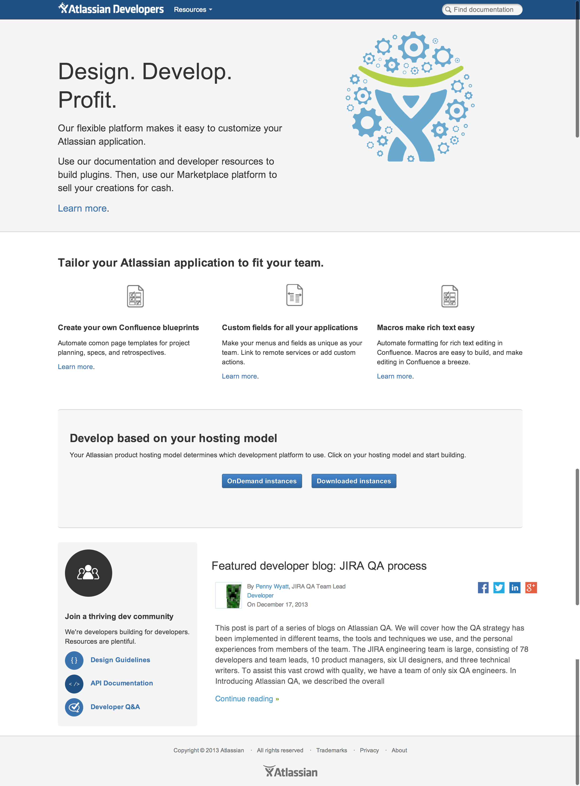
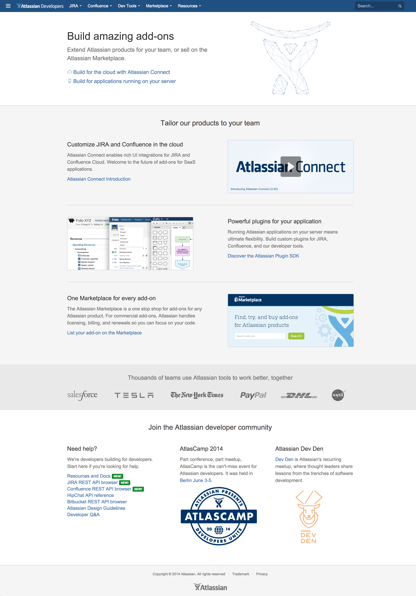

Atlassian developer documentation
In effort to expose emerging developer platforms, we redesigned our developer documentation homepage. Our existing design didn’t expose the complexities of multiple products and platforms, and required extra effort and background knowlege from our site visitors.
Here’s what it looked like before:

Proposed
We wanted to expose a choice between platforms, and highlight the benefits of extending Atlassian products. Working with collaborators, I proposed the following:

Implemented
Finally, after several rounds of iteration, we implemented this design:
